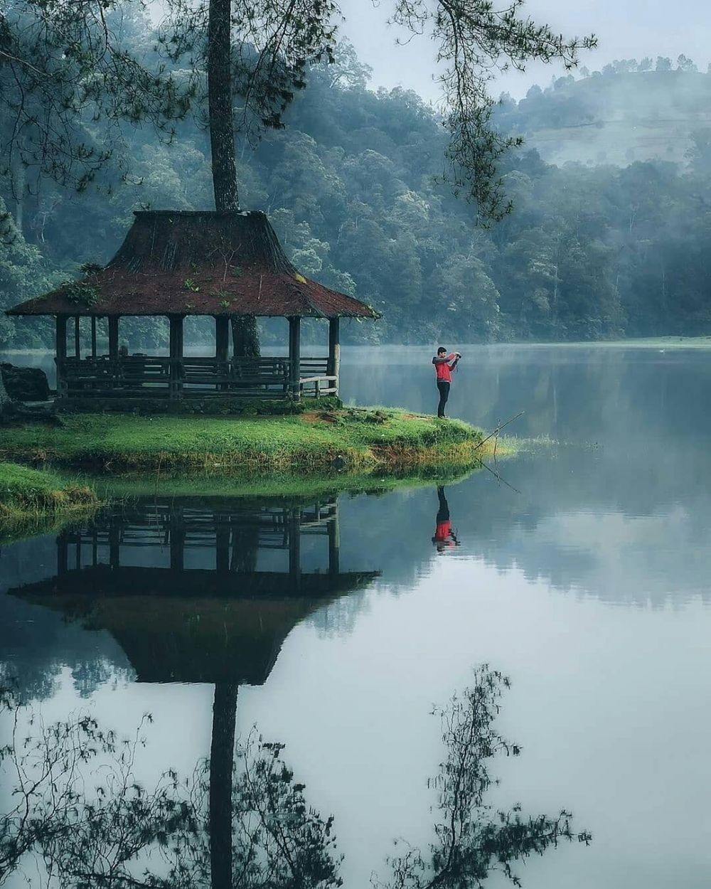
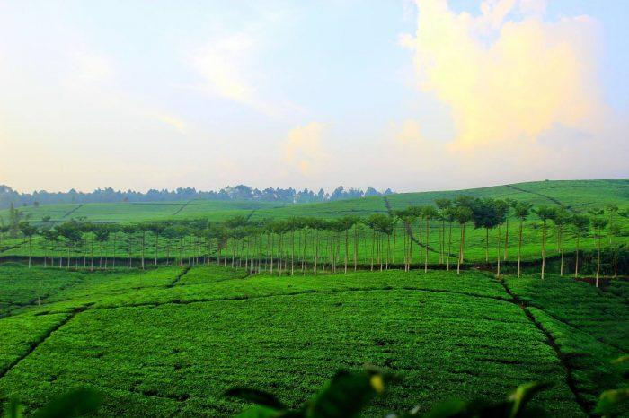
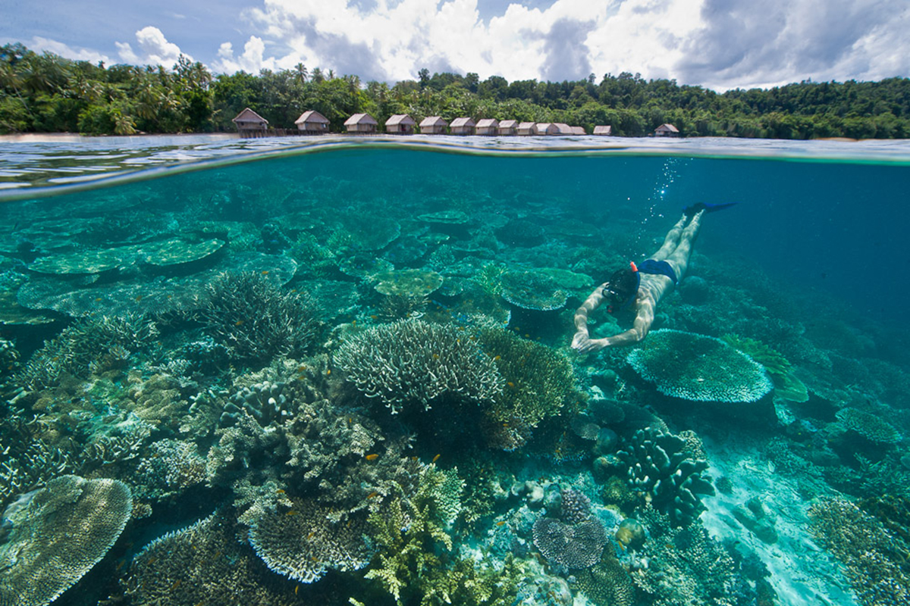
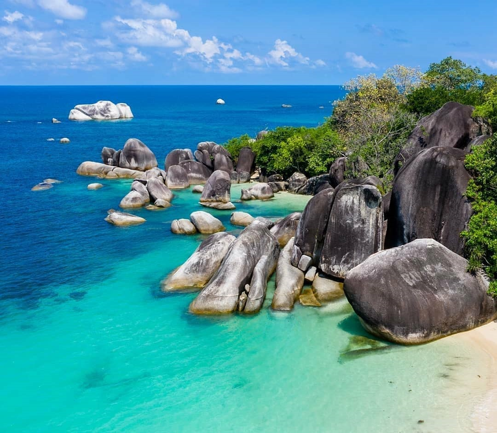

Situ Patenggang di Jawa Barat
Jika Danau Rawapening memiliki Bukit Cinta, maka Situ Patenggang memiliki Batu Cinta yang juga tidak kalah eksotis untuk kamu nikmati. Situ Patenggang sendiri adalah sebuah danau cantik yang terletak di antara indahnya perkebunan teh di wilayah Ciwidey, Jawa Barat.
Untuk menenangkan pikiran dari penatnya rutinitas dan stress, Situ Patenggang sangat layak direkomendasikan. Suasana udara pegunungan yang sejuk dengan lambaian dedaunan menghijau akan memberikan perasaan yang lebih segar, damai dan nyaman, sehingga membuat pikiran kamu menjadi lebih fresh ketika mengunjunginya.

Kebuh Teh Kabawetan di Bengkulu
Pemandangan alam Indonesia dengan keindahan yang super cakep juga ada di kabupaten Kepahiang, propinsi Bengkulu. Di tempat ini ada sebuah tempat bernama Kabawetan yang merupakan perkebunan teh sangat populer dengan latar belakang pegunungan Bukit Barisan yang membentang. Seperti halnya banyak tempat dengan pemandangan paling indah di Indonesia, kebun teh di Kabawetan juga memiliki banyak keistimewaan.
Dari sudut yang tepat, kamu akan melihat perkebunan the Kabawetan layaknya lukisan pemandangan alam yang memukau. Di belakang perkebunah teh ini adalah sebuah bukit destinasi wisata lain dengan sumber air panas yang diberi nama Bukit Hitam. Sementara itu, kota Kepahiang yang cantik nampak indah bertahta di lembah-lembahnya tak jauh dari Perkebunah Teh Kabawetan.

Kepulauan Derawan di Kalimantan Timur
Di Kalimantan Timur, ada sebuah tempat wisata yang dalam sepuluh tahun terakhir, telah tumbuh menjadi magnet wisata Indonesia yang sangat kuat. Tempat wisata yang dimaksud adalah kepulauan Derawan yang merupakan sebuah objek wisata sangat ideal untuk kamu yang mendambakan keindahan wisata bahari yang masih asri nan cantik.
Sebagai sebuah kepulauan, Derawan tentu saja terdiri dari beberapa pulau sebagai bagiannya. Nah, di tempat-tempat yang terpisah tidak begitu jauh dalam kepulauan ini, kamu akan menemukan tempat yang sama-sama eksotis.Pantai Labuan Cermin dengan air laksana kaca, danau yang menjadi habitat ubur-ubur tanpa penyengat, akan menjadi destinasi paling indah untuk kamu melakukan snorkeling atau pun hanya menghabiskan masa liburan sambil bersantai bersama orang tercinta.

Danau Toba
Danau toba menjadi gambar pemandangan alam terindah di Indonesia selanjutnya, Danau yang berada di pulau Sumatera ini mempunyai panjang 100KM dengan Lebar 30KM membuatnya menjadi Danau vulkanik terbesar di Indonesia.Danau dengan kedalaman lebih dari 500M ini mempunyai pemandangan alam yang sangat menakjubkan, di sekitar danau di kelilingi perbukitan dan hamparan hijau pepohonan yang masih sangat asri.
Danau toba juga menjadi ikon pariwisata utama masyarakat sumatera utara bahkan telah dinobatkan oleh pemerintah menjadi satu dari 10 destinasi bali baru di Indonesia.

Raja Ampat
Raja Ampat adalah gugusan kepulauan karang yang berada di ujung timur Indonesia, Papua. bagi pecinta kegiatan menyelam, raja ampat merupakan surga yang tidak bisa diungkapkan dengan kata-kata.Airnya yang jernih dengan terumbu karangnya yang beraneka ragam menjadi rumah bagi berbagai jenis ikan yang akan membuat mata kita enggan melepaskan pandangan.
Selain bawah lautnya yang mempesona, permukaan daratannya pun tidak kalah menggoda, hamparan pasir pantainya yang berwarna putih dengan puluhan gugusan pulau karangnya membuat tempat ini menjadi mutiara yang ada di ujung timur indonesia.

Pantai Tanjung Kelayang
Pantai tanjung kelayang merupakan salah satu pantai dengan pemandangan alam terindah di kepulauan bangka belitung, Lokasinya berada di Kecamatan Sijuk dan berjarak sekitar 27 kilometer dari Tanjung Pandan yang merupakan ibu kota Kabupaten Belitung.Pantai Tanjung Kelayang sendiri terbagi menjadi dua bagian, yaitu sebelah barat dengan gugusan batu granit dan sebelah timur berupa hamparan pasir putih yang membentang.
Anda bisa berenang dikelilingi batuan granit raksasa yang akan melindungi anda dari terpaan ombak pantai, airnya pun sangat jernih yang akan membuat anda betah berlama-lama di tempat ini.